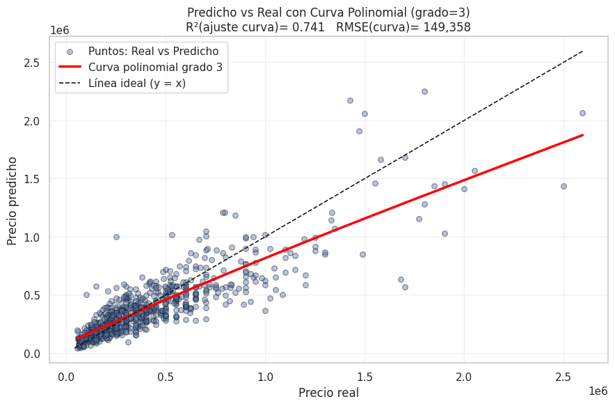
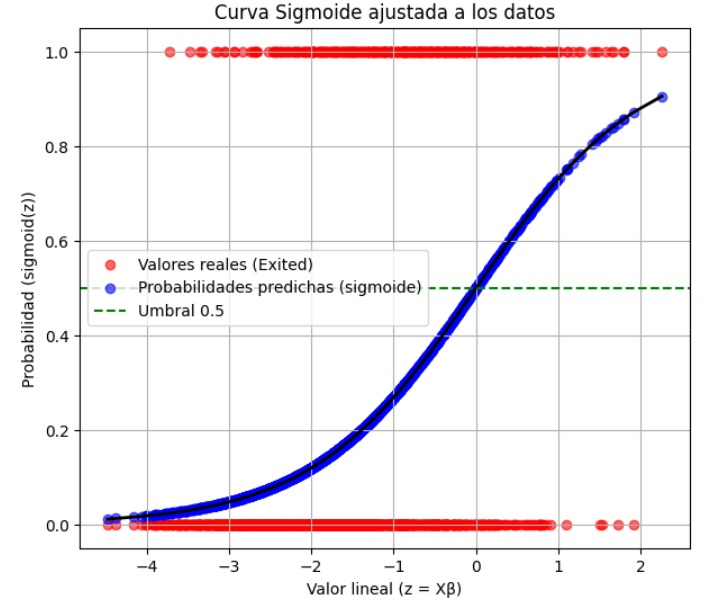

📊 Resultados y Conclusiones
💓 Heart Disease - Gráficos y Análisis
Gráfico de Valores Reales vs Predichos:

Análisis y Conclusiones:
- El modelo de regresión lineal muestra un R² de ejemplo: 0.85, indicando un buen ajuste a los datos.
- Fortalezas: fácil interpretación, rápido entrenamiento, adecuado para relaciones lineales.
- Debilidades: no captura relaciones no lineales complejas entre variables como podría ocurrir con polinomios de mayor grado.
- Conclusión: el modelo es útil para predecir la frecuencia cardiaca máxima con base en edad, presión y colesterol, pero podría mejorarse incluyendo más variables predictoras.
🚗 Coches Usados - Gráficos y Análisis
Predicho vs Real con Curva Polinomial:
Análisis y Conclusiones:
- El modelo polinomial regularizado (RidgeCV) logra un R² de ejemplo: 0.78, mostrando un buen desempeño en la predicción de precios.
- Fortalezas: maneja multicolinealidad de las variables polinomiales, captura relaciones no lineales entre características y precio.
- Debilidades: requiere preprocesamiento cuidadoso y transformación logarítmica para homoscedasticidad; sensible a outliers si no se filtran correctamente.
- Conclusión: este modelo es adecuado para predicción de precios de coches usados, pero puede mejorarse incluyendo más características y ajustes de hiperparámetros.
📉 Predicción de Clientes - Gráficos y Análisis
Curva Sigmoide Ajustada a los Datos:
Análisis y Conclusiones:
- La regresión logística muestra una exactitud (accuracy) de ejemplo: 0.85 y un AUC cercano a 0.90, lo que indica buena capacidad de clasificación.
- Fortalezas: modelo interpretable, probabilidad directa de churn, fácil de implementar.
- Debilidades: no captura relaciones no lineales complejas sin transformación o polinomios; sensible a correlación entre features.
- Conclusión: el modelo es eficaz para predecir clientes que abandonan, permitiendo estrategias de retención basadas en probabilidades predichas.